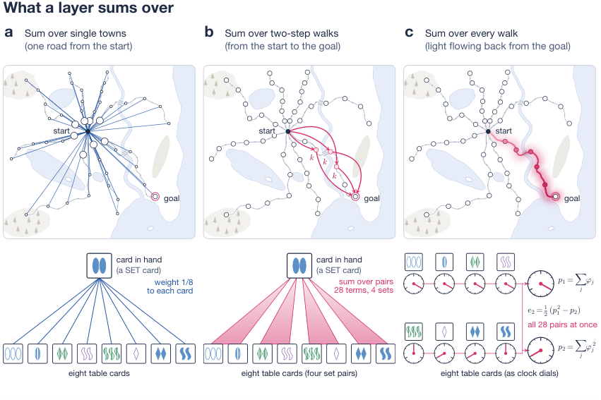
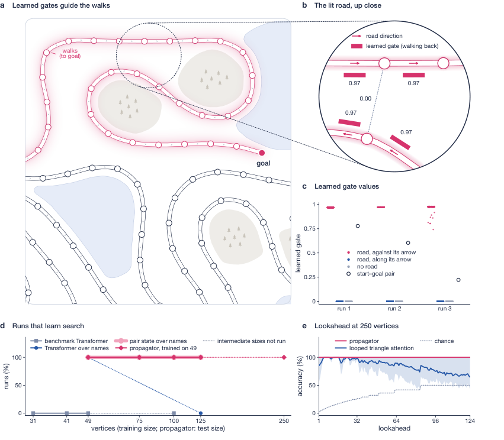
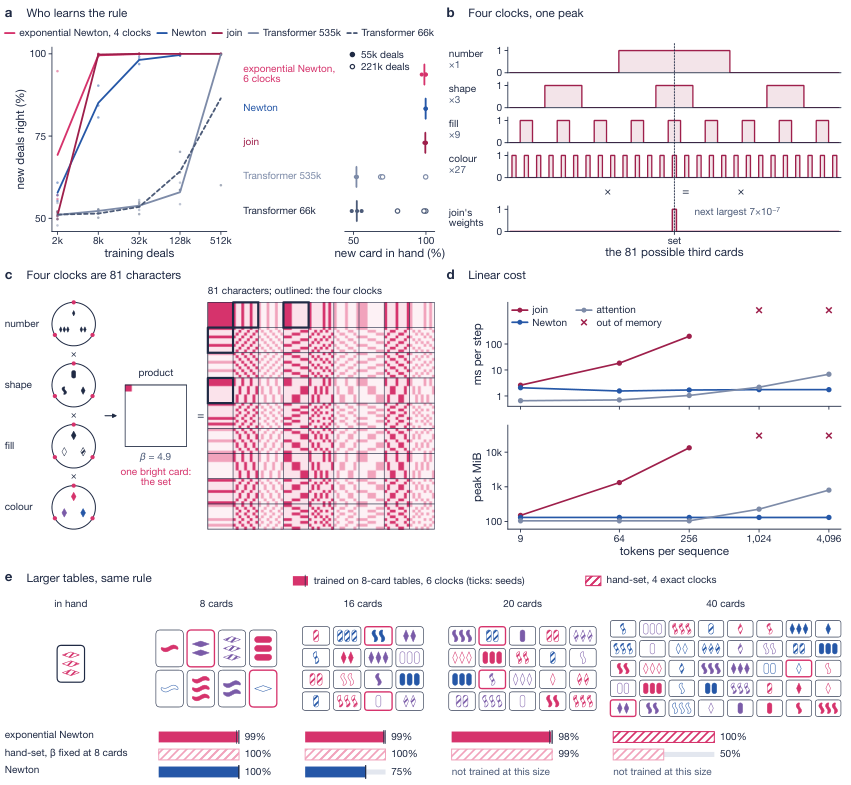

Theorems on the depth-law construction, the size law, and the character-based SET pair counting are machine-checked in Lean 4 with Mathlib and released with the code.
Abstract
Transformers stop learning graph search as graphs grow, and learn the card game SET only after many distinct questions, although attention can represent both. We read these failures, and the uneven record of higher-order attention, from what a layer sums over: each layer we study computes the partition function of a family of witnesses and reads it at a temperature. Two laws follow. The depth law is a known result of logic, which we state for these layers: L layers over two-step walks reach exactly 2^L - 1 steps, just as a logical statement with L nested clauses of the form "there is a vertex such that" sees exactly that far. We build a construction that reaches this far, checked in Lean, and, when vertices carry no names, no such network reaches further. The size law is the cost of reading at a temperature, which logic does not have: existence is read correctly at every size, in the worst case, if and only if inverse temperature times margin is at least the logarithm of the number of candidates. Layers built on these laws, and on two principles that we test, learn where Transformers fail. One propagator layer trained on 49-vertex graphs answers every question at every search depth on 250-vertex graphs. Given the modulus 3, exponential Newton computes the softmax of 2-simplicial attention over pairs exactly in 3^d n operations for d clocks; with six clocks it learns SET from as few deals as 2-simplicial attention and transfers from 8- to 20-card tables. On CLRS-30 without hints, a 186,000-parameter block of OR-join and power-mean channels matches (within half a point) or beats a model of at least 73 million parameters on 9 of 12 graph tasks of the official test set, and on 8 of 12 with freshly drawn test graphs. The same account explains where pair layers did not help and where parallel layers must loop.
Problem
Transformers fail to learn graph search on larger graphs and learn the card game SET only after many deals, and the uneven benefit of higher-order attention has no predictive account.
Approach
Each attention-like layer is modeled as computing the partition function of a family of witnesses (tokens, pairs, walks, subsets), read through a link at a temperature. Two laws are derived and proved: a depth law (L layers over two-step walks reach exactly 2^L-1 steps) and a size law (existence is read correctly at every size iff inverse temperature times margin is at least log of the number of candidates). The depth-law construction, the size law, and a character identity for counting SET pairs are formalized in Lean 4 with Mathlib, with no sorry. New layers (propagator, Newton attention, exponential Newton) are built from these principles and tested.

Fig. 1 | What a layer sums over. Hand-set layers, nothing trained, on one 49-vertex search question (top; towns are vertices, roads directed edges) and one eight-card SET deal (bottom). a , A lookup sums over single witnesses: the start weighs every town by its own score (circle area, softmax weight: 0.100 for each of the eight children, 0.005 for every other town), and the card in hand weighs eac
Results
A propagator layer trained on 49-vertex graphs answers every question at every lookahead on 250-vertex graphs. Exponential Newton learns SET from as few deals as 2-simplicial attention and transfers from 8- to 20-card tables. A 186K-parameter looped block matches or beats a 73M-parameter model on 9 of 12 CLRS-30 graph tasks.

Fig. 2 | One trained propagator layer searches graphs five times larger than any in training. a , Part of a 250-vertex test question (lookahead 31), lit by the walks to the goal of a propagator trained on graphs of up to 49 vertices. b , The circled spot: each road’s learned gate for walking back (bars), and one between towns with no road. c , Every learned gate of the working channel in three tra

Fig. 3 | SET: who learns the rule, how the join decides, why exponential gates hold as tables grow. a , Accuracy on new deals against training deals (mean of three seeds; exponential Newton with four clocks); right, accuracy with a card in hand never held, after 55,296 deals with 27 cards in hand (filled; six clocks) and 221,184 (open; Transformers). b , One trained join: each attribute’s clock ov